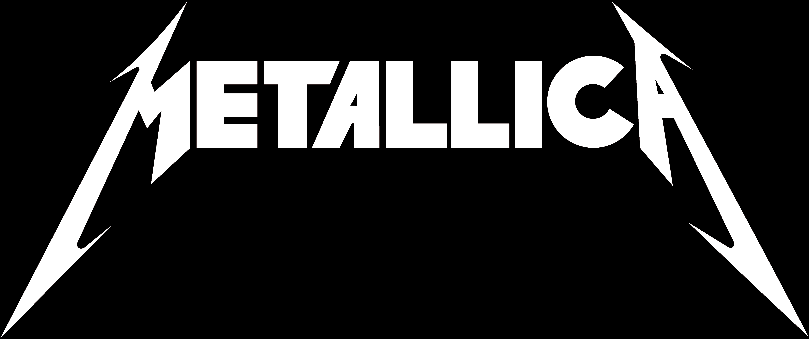

Música
Queen

Queen es una banda de rock inglesa formada en Londres en
1970. La formación original fue Freddie Mercury (voz principal, piano), Brian May (guitarra, voz), Roger
Taylor (batería, voz) y John Deacon (bajo, voz). Antes de formar Queen, Brian May y Roger Taylor habían
tocado juntos en una banda llamada Smile. Freddie Mercury era un fan de Smile y los alentó a
experimentar con técnicas de escenario y grabación más elaboradas. Luego se unió a la banda en 1970,
sugirió «Queen» como un nuevo nombre de banda y adoptó su nombre artístico familiar. John Deacon también
fue reclutado para completar la alineación.
Su lanzamiento del álbum «A Night at the Opera» en 1975, les trajo éxito internacional. Entraron en la corriente principal con la canción del álbum «Bohemian Rhapsody», que se mantuvo en el número uno en el Reino Unido durante nueve semanas y popularizó el video musical. Su álbum de 1977, News of the World, contenía «We Will Rock You» y «We Are the Champions», que también se han convertido en himnos en eventos deportivos. En 1991, mientras abrazaba su éxito y sus fans, Mercury murió de bronconeumonía, una enfermedad relacionada con el SIDA. Deacon luego se retiró y dejó la banda en 1997. Después de eso, tanto Brian May como Roger Taylor regresaron al estado de la banda Smile, aunque mantuvieron el nombre de «Queen».
A principios de la década de 1980, Queen era una de las bandas de rock de estadio más grandes del mundo. Su actuación en Live Aid de 1985 está clasificada entre las mejores de la historia del rock por varias publicaciones musicales, con una encuesta de la industria de 2005 que lo clasifica como la mejor. Queen ha ganado un premio a la «Mejor Banda de los 80» y tiene una estrella en Hollywood. Lanzaron más de 16 éxitos número uno y fueron incorporados al Salón de la Fama del Rock and Roll en 2001.
Su lanzamiento del álbum «A Night at the Opera» en 1975, les trajo éxito internacional. Entraron en la corriente principal con la canción del álbum «Bohemian Rhapsody», que se mantuvo en el número uno en el Reino Unido durante nueve semanas y popularizó el video musical. Su álbum de 1977, News of the World, contenía «We Will Rock You» y «We Are the Champions», que también se han convertido en himnos en eventos deportivos. En 1991, mientras abrazaba su éxito y sus fans, Mercury murió de bronconeumonía, una enfermedad relacionada con el SIDA. Deacon luego se retiró y dejó la banda en 1997. Después de eso, tanto Brian May como Roger Taylor regresaron al estado de la banda Smile, aunque mantuvieron el nombre de «Queen».
A principios de la década de 1980, Queen era una de las bandas de rock de estadio más grandes del mundo. Su actuación en Live Aid de 1985 está clasificada entre las mejores de la historia del rock por varias publicaciones musicales, con una encuesta de la industria de 2005 que lo clasifica como la mejor. Queen ha ganado un premio a la «Mejor Banda de los 80» y tiene una estrella en Hollywood. Lanzaron más de 16 éxitos número uno y fueron incorporados al Salón de la Fama del Rock and Roll en 2001.
Metallica
Metallica es una banda de Thrash Metal estadounidense
formada en 1981. La formación original fue James Hetfield (vocalista y guitarrista rítmico), Dave
Mustaine (Guitarra principal), Lars Ulrich (batería), Ron McGovney (Bajista). El grupo entró en la
corriente principal desde su álbum Self-Titled y el exitoso sencillo «Enter Sandman».
Con sus dos primeros álbumes, Kill ‘Em All y Ride The Lightning alcanzando el éxito underground, su tercer trabajo, Master of Puppets se ha convertido desde entonces en uno de los álbumes de heavy metal más importantes de la historia, ya que se convirtió en el primer álbum de Thrash Metal en obtener la certificación de platino. La canción titular se ha convertido desde entonces en la canción más tocada de la banda en vivo.
El 27 de septiembre de 1986, el bajista Cliff Burton fue asesinado después de ser arrojado por la ventana y aplastado hasta la muerte.
Metallica lanzó su primer video musical en 1989. La canción fue One de su álbum de 1988, … Y Justicia para Todos. La canción recibió una fuerte aclamación de la crítica y desde entonces se ha convertido en su canción más tocada del álbum. El álbum también vio el debut del nuevo bajista, Jason Newsted.
Su quinto álbum, Metallica (también conocido como Black Album), adoptó un enfoque más convencional y desde entonces se ha convertido en uno de los álbumes más vendidos en Estados Unidos, certificado 16x Platinum. El álbum generó cinco sencillos, Enter Sandman, The Unforgiven, Nothing Else Matters, Wherever I May Roam y Sad But True.
Después de Load, ReLoad, Jason dejó la banda y el fuertemente criticado St. Anger presentó al productor de larga data Bob Rock tocando el bajo, aunque Robert Trujillo más tarde se le daría el trabajo de bajista permanente.
El noveno álbum de estudio de Metallica, Death Magnetic, recibió elogios de la crítica cuando la banda regresó a sus raíces thrash de los 80. Los críticos lo han llamado el mejor álbum de Metallica en 20 años. El álbum también hizo que Metallica se convirtiera en la primera banda en recibir cinco álbumes consecutivos debutando en el número 1 en el Billboard 200. También fue el debut de Robert Trujillo en un álbum de Metallica. La canción, My Apocalypse, ganó Metallica un Grammy en 2009 a la Mejor Interpretación de Metal.
El décimo álbum de estudio de Metallica, Hardwired… to Self-Destruct, sería lanzado en todo el mundo el 18 de noviembre de 2016 a través de su sello independiente, Blackened Recordings. También dieron a conocer la lista de canciones, el artwork del álbum y lanzaron un video musical para el primer sencillo del álbum, «Hardwired». El álbum fue lanzado según lo programado y debutó en el número uno en el Billboard 200.
Metallica eha estado recientemente en una gira mundial llamada «WorldWired Tour» con Avenged Sevenfold y Volbeat.
Con sus dos primeros álbumes, Kill ‘Em All y Ride The Lightning alcanzando el éxito underground, su tercer trabajo, Master of Puppets se ha convertido desde entonces en uno de los álbumes de heavy metal más importantes de la historia, ya que se convirtió en el primer álbum de Thrash Metal en obtener la certificación de platino. La canción titular se ha convertido desde entonces en la canción más tocada de la banda en vivo.
El 27 de septiembre de 1986, el bajista Cliff Burton fue asesinado después de ser arrojado por la ventana y aplastado hasta la muerte.
Metallica lanzó su primer video musical en 1989. La canción fue One de su álbum de 1988, … Y Justicia para Todos. La canción recibió una fuerte aclamación de la crítica y desde entonces se ha convertido en su canción más tocada del álbum. El álbum también vio el debut del nuevo bajista, Jason Newsted.
Su quinto álbum, Metallica (también conocido como Black Album), adoptó un enfoque más convencional y desde entonces se ha convertido en uno de los álbumes más vendidos en Estados Unidos, certificado 16x Platinum. El álbum generó cinco sencillos, Enter Sandman, The Unforgiven, Nothing Else Matters, Wherever I May Roam y Sad But True.
Después de Load, ReLoad, Jason dejó la banda y el fuertemente criticado St. Anger presentó al productor de larga data Bob Rock tocando el bajo, aunque Robert Trujillo más tarde se le daría el trabajo de bajista permanente.
El noveno álbum de estudio de Metallica, Death Magnetic, recibió elogios de la crítica cuando la banda regresó a sus raíces thrash de los 80. Los críticos lo han llamado el mejor álbum de Metallica en 20 años. El álbum también hizo que Metallica se convirtiera en la primera banda en recibir cinco álbumes consecutivos debutando en el número 1 en el Billboard 200. También fue el debut de Robert Trujillo en un álbum de Metallica. La canción, My Apocalypse, ganó Metallica un Grammy en 2009 a la Mejor Interpretación de Metal.
El décimo álbum de estudio de Metallica, Hardwired… to Self-Destruct, sería lanzado en todo el mundo el 18 de noviembre de 2016 a través de su sello independiente, Blackened Recordings. También dieron a conocer la lista de canciones, el artwork del álbum y lanzaron un video musical para el primer sencillo del álbum, «Hardwired». El álbum fue lanzado según lo programado y debutó en el número uno en el Billboard 200.
Metallica eha estado recientemente en una gira mundial llamada «WorldWired Tour» con Avenged Sevenfold y Volbeat.
Bon Jovi
Bon Jovi es una banda de hard rock formada en 1983, que tuvo
una racha de álbumes exitosos a finales de la década de 1980. La banda originalmente consistía en el
vocalista principal Jon Bon Jovi, el guitarrista Ritchie Sambora (a la izquierda en 2013), el bajista
Alec John Such (a la izquierda en 1994), el teclado David Bryan y el batería Tico Torres. El álbum más
famoso de la banda es Slippery When Wet, lanzado en 1986, y tenía múltiples singles exitosos como «You
give love a bad name», «Livin’ On A Prayer» y «Wanted Dead Or Alive». El éxito de la banda continuó
hasta bien entrados los años 1990 y 2000, y el grupo todavía hace música hasta el día de hoy. Han
vendido alrededor de 83 millones de álbumes en todo el mundo. Los primeros cuatro álbumes de la banda
mezclaron los géneros de glam metal y hard rock. Sus dos primeros álbumes utilizaron una mezcla más
pesada de glam metal y hard rock, mientras que su seguimiento, que fue Slippery When Wet y New Jersey,
presentó una mezcla comercializada más convencional de glam metal y hard rock. Se habían desprendido del
sonido glam metal de su quinto álbum de estudio, Keep the Faith, y su sexto, These Days, utilizando un
sonido de hard rock más maduro. Crush se caracterizó como «lo suficientemente lejos en el pop/rock como
para tener realmente la oportunidad de obtener airplay», mientras que Bounce fue descrito como «rock
pesado y serio». Have a Nice Day también se caracterizó por ser más pesado que Crush.
La banda alteró su sonido dramáticamente en su próximo lanzamiento, Lost Highway, mezclando influencias de la música country y el country rock, un sonido que Jon Bon Jovi describió como «un álbum de Bon Jovi influenciado por Nashville». Bon Jovi regresó a un sonido de rock más típico en The Circle, que Allmusic describió como «conjurado por guitarras resonadas y retrasadas, teclados brillantes y ritmos espaciosos».
La banda alteró su sonido dramáticamente en su próximo lanzamiento, Lost Highway, mezclando influencias de la música country y el country rock, un sonido que Jon Bon Jovi describió como «un álbum de Bon Jovi influenciado por Nashville». Bon Jovi regresó a un sonido de rock más típico en The Circle, que Allmusic describió como «conjurado por guitarras resonadas y retrasadas, teclados brillantes y ritmos espaciosos».
Guns N Roses
Guns N’ Roses es una banda de hard rock estadounidense de
Los Ángeles formada en 1985. La formación clásica, firmada por Geffen Records en 1986, consistía en el
vocalista Axl Rose, el guitarrista principal Slash, el guitarrista rítmico Izzy Stradlin, el bajista
Duff McKagan y el batería Steven Adler. Aparte del hard rock, también están asociados con el heavy
metal.
Son mejor conocidos por su álbum ‘Appetite for Destruction’ y canciones como ‘Sweet Child O’ Mine’. Guns N’ Roses ha sido acreditado por revivir la popularidad principal de la música rock, en un momento en que la música popular estaba dominada por la música dance y el glam metal. Sus finales de la década de 1980 y principios de la década de 1990 se han descrito como el período en el que el grupo produjo una «rebeldesidad hedonista» que recuerda a los primeros Rolling Stones, una reputación que le había ganado al grupo el apodo de «la banda más peligrosa del mundo». La alineación clásica de la banda, junto con los miembros posteriores Reed y el batería Matt Sorum, fue incluida en el Salón de la Fama del Rock and Roll en 2012, en su primer año de elegibilidad.
Son mejor conocidos por su álbum ‘Appetite for Destruction’ y canciones como ‘Sweet Child O’ Mine’. Guns N’ Roses ha sido acreditado por revivir la popularidad principal de la música rock, en un momento en que la música popular estaba dominada por la música dance y el glam metal. Sus finales de la década de 1980 y principios de la década de 1990 se han descrito como el período en el que el grupo produjo una «rebeldesidad hedonista» que recuerda a los primeros Rolling Stones, una reputación que le había ganado al grupo el apodo de «la banda más peligrosa del mundo». La alineación clásica de la banda, junto con los miembros posteriores Reed y el batería Matt Sorum, fue incluida en el Salón de la Fama del Rock and Roll en 2012, en su primer año de elegibilidad.
Michael Jackson
Michael Joseph Jackson fue un cantante, bailarín y
compositor estadounidense
nacido el 29 de agosto de 1958 en Gary, Indiana y falleció el 25 de junio de 2009. Donó (al menos) un
notable 500,000,000 de dólares a la caridad. Michael también es conocido como El Rey del Pop (un título
que le dio Elizabeth Taylor) o bajo las iniciales MJ.
Es el propietario del álbum más vendido de todos los tiempos, Thriller (1982), que fue galardonado 30 veces con platino a principios de 2016. Sus otros álbumes Bad, Dangerous y History están entre los mejores álbumes de todos los tiempos y todos alcanzaron la posición número uno en las listas de éxitos de Estados Unidos.
Jackson fue el primer artista negro cuyo video musical (Billie Jean) se transmitió por MTV, y con ese éxito rompió una barrera racial en la industria musical. Con su música y vídeos musicales revolucionó el mundo de la música pop. Jackson es muy conocido por sus movimientos de baile característicos (moonwalk, lean, sidewalk, Thriller dance), su famosa ropa (sombrero negro, guante de lentejuelas blancas, chaquetas militares), su voz cantante única y canciones como Off the Wall, Don’t Stop ‘til You Get Enough, Thriller, Billie Jean, Beat It, Bad, The Way You Make Me Feel, Man In the Mirror, Heal the World. Blanco o negro, recuerda el tiempo, la canción de la Tierra y no se preocupan por nosotros. También es el mejor artista de todos los tiempos según el Libro Guinness de los Récords y uno de los artistas solistas más vendidos de todos los tiempos.
Es el propietario del álbum más vendido de todos los tiempos, Thriller (1982), que fue galardonado 30 veces con platino a principios de 2016. Sus otros álbumes Bad, Dangerous y History están entre los mejores álbumes de todos los tiempos y todos alcanzaron la posición número uno en las listas de éxitos de Estados Unidos.
Jackson fue el primer artista negro cuyo video musical (Billie Jean) se transmitió por MTV, y con ese éxito rompió una barrera racial en la industria musical. Con su música y vídeos musicales revolucionó el mundo de la música pop. Jackson es muy conocido por sus movimientos de baile característicos (moonwalk, lean, sidewalk, Thriller dance), su famosa ropa (sombrero negro, guante de lentejuelas blancas, chaquetas militares), su voz cantante única y canciones como Off the Wall, Don’t Stop ‘til You Get Enough, Thriller, Billie Jean, Beat It, Bad, The Way You Make Me Feel, Man In the Mirror, Heal the World. Blanco o negro, recuerda el tiempo, la canción de la Tierra y no se preocupan por nosotros. También es el mejor artista de todos los tiempos según el Libro Guinness de los Récords y uno de los artistas solistas más vendidos de todos los tiempos.
AC-DC
AC/DC es una banda australiana de hard rock, formada en
noviembre de 1973 por los hermanos Malcolm y Angus Young, que continuaron como miembros hasta la
enfermedad de Malcolm y su partida en 2014. Fueron encabezados por Bon Scott hasta su prematura muerte
debido a un envenenamiento por alcohol en 1979, después de lo cual contrataron a Brian Johnson para
encabezar la banda.